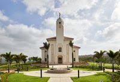

About the Temple
The Durban South Africa Temple of Jesus Christ of Latter-day Saints is located in Umhlanga, Durban. Its design reflects local architecture, with a red clay tile roof, stone panels, and a tower topped with the Angel Moroni.
The grounds feature trees, flowers, and the king protea motifs, while inside the temple is beautifully decorated with woodwork, marble floors, and African-inspired rugs. The temple has rooms for instruction, sealings, and baptisms, and serves members from KwaZulu-Natal, Eastern Cape, Lesotho, and Mozambique. It also has a visitor center, housing, and a distribution center, providing a sacred place for worship and making covenants with God.
It was dedicated on the 16th of February 2020, By Elder Rasband
